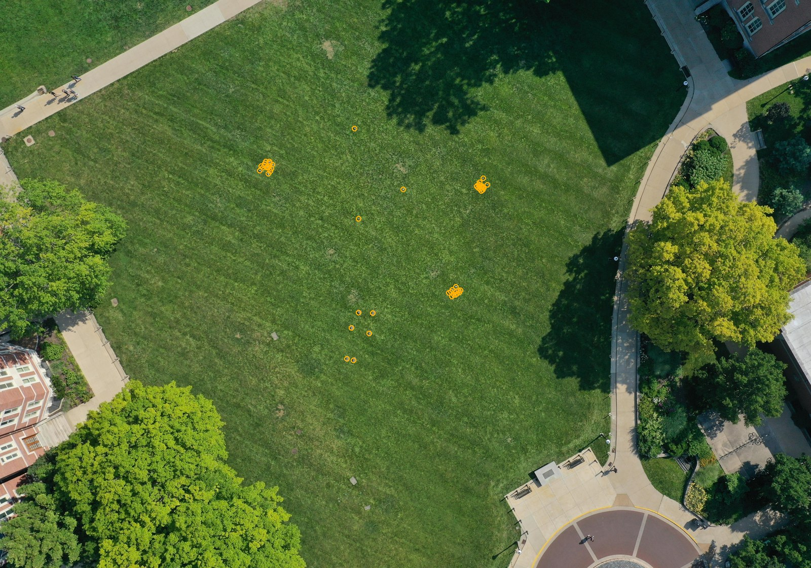
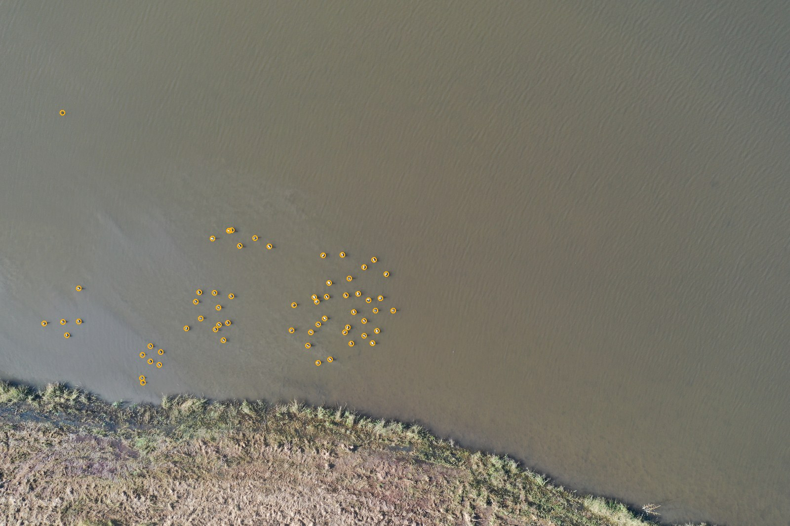
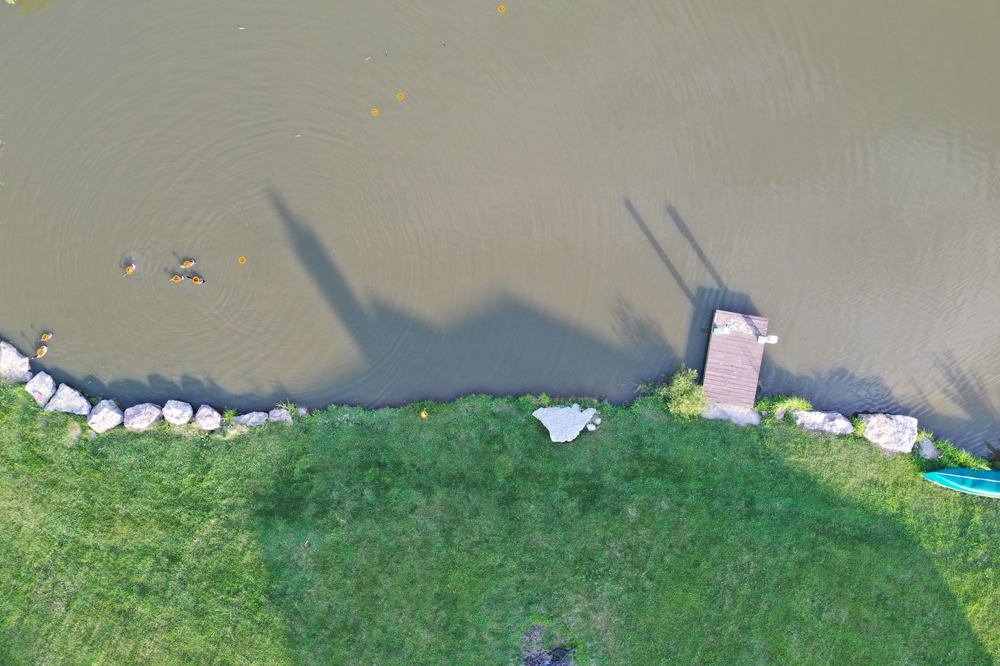

Waterfowl Workbench · generated 2026-09-30 12:16
| Photographs | 3 |
| Birds counted | 128 |
| Model count before review | 128 |
| Changed by review | +0 |
| Reviewed by a person | 0 of 288 cells (0%) |
| Model | YOLOv5, run 2026-08-27_00-57-30 — on the test split: point AP 93.0%, F1 91.4%, counting MAE 0.368 birds per 512 px crop |
| Threshold | 0.237 — the run's t*, the score cut that minimised counting error on the test split |
| Notes | held-out test photographs with their labels, sampled by the workbench |
This survey came with label files for 3 photograph(s), holding 113 annotated birds. Detections were matched to annotated birds one-to-one within 40 px, highest score first (the project's point protocol).
| Model | After review | |
|---|---|---|
| Birds counted | 128 | 128 |
| Annotated birds | 113 | 113 |
| Mean absolute error per photograph | 5.00 | 5.00 |
| Precision at the threshold | 88.3% | |
| Recall at the threshold | 100.0% | |
| F1 at the threshold | 93.8% | |
| Point AP (threshold-free) | 98.4% |
Annotations can be incomplete: the project found 1,639 detections that all eight models agree on but no label covers. A "false positive" here may be an unlabelled bird — the reviewed column is the one to trust.
| Photograph | Model | Reviewed | Change | Cells reviewed | Annotated |
|---|---|---|---|---|---|
| Bird_A_80_5.jpg | 54 | 54 | +0 | 0/96 | 46 |
| Bird_B_DJI_0328.JPG | 63 | 63 | +0 | 0/96 | 61 |
| Bird_C_DJI_0056_30m.JPG | 11 | 11 | +0 | 0/96 | 6 |
Full table: counts_heldout_sample_3.csv; every detection with its score and decision: detections.csv.
Amber: counted by the model, not reviewed · green: confirmed · red cross: rejected · cyan: added by the reviewer.
Bird_A_80_5.jpg — 54 birds

Bird_B_DJI_0328.JPG — 63 birds

Bird_C_DJI_0056_30m.JPG — 11 birds
